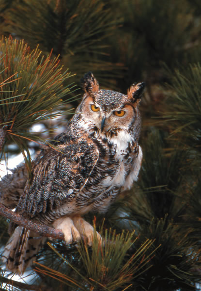

Tracks in the snow, glistening icicles, a deer nibbling on low branches??these are only a few of the many pleasures of winter exploring. But if you look and listen just a bit more closely, youll also discover that the frozen world is full of less-than-obvious natural wonders that most of us dont see simply because we dont take the time. Here are some examples.
A Touch of Velvet
Standing in stoic defiance of icy temperatures that would flash freeze most other fungi, the tawny-capped winter mushroom, Flammulina
velutipes, fruits in the dead of winter even in the most northern states, giving heart to winter-weary shroom hunters who are in search of something??anything??to put in their gathering baskets.
Also called the velvet foot mushroom for its soft, fuzzy base, this is the wild version of the commercially cultivated enoki mushroom. Enokis, however, are grown in sawdust in the dark, resulting in light-starved mushrooms with long, thin stems and tiny caps that look more like bean sprouts than fungi. Wild winter mushrooms have thick stems and wide, fleshy caps.
Watch for these hardy survivors standing in little clusters at the feet of elms and other woodland trees. But unless youre an expert, dont even think about eating them??theyre easily confused with an aptly named look-alike, the deadly galerina.
Hoot Suitors
At dusk, if you think you hear the soft cooing of a mourning dove, listen again more carefully. It may be the similar-sounding but distinctive hoo-hoo hooooo hoo-hoo of a great horned owl.
Known as the feathered tiger of the air, great horned owls are ferocious predators of anything and everything they can get their talons on??from beetles, frogs and fish to rabbits, raccoons, porcupines and domestic cats.
But starting in December, great horned owls turn their attention to mating and fill the evening air with come-hither hoots and other vocalizations. If youre lucky, you might spy a pair flirting at twilight in a courtship ritual that includes spreading their wings, bowing their heads and clicking their beaks. By late January in most areas, females sit silently atop eggs??a pair, usually??that will hatch a month later, in time for the young to mature enough to feed on springs fresh supply of infant animals. Look for great horned owls in the abandoned stick nests of crows or hawks.
Woolly Brrrrr
Sift beneath leaves or peek under a snow-dusted log, and you may discover a curled-up, apparently lifeless black-and-brown-banded caterpillar??the famed woolly bear said to predict the severity of winters by the lushness of its fuzzy coat. Dont give it up for dead just yet, though.
Like a variety of other overwintering creatures, woolly bears produce an internal antifreeze called glycerol that protects their vital organs from subfreezing temperatures. But more than simply preventing freezing, the woolly bear is able to endure the formation of ice crystals in its body by limiting the growth of ice to the spaces between tissue cells. Meanwhile, it produces sugars that keep its blood and cellular water in liquid form. Come the thaw in early spring, the frozen bear will rouse itself, find a sheltered place on which to spin a cocoon and pupate. In early summer, a handsome Isabella tiger moth (Pyrrharctia isabella) emerges.
Woolly bears are only one of dozens of freeze-tolerant species, including some turtles as well as many insects in either the adult, larval or pupal stage. Perhaps most astounding is the wood frogs ability to withstand being frozen without (ahem) croaking. In winter, its entire abdominal cavity fills with ice, completely encasing all its internal organs. Its blood stops flowing; breathing and heartbeats cease; its eyes turn white because the lenses freeze. And so the frog-cicle remains until the thaw, when spring quite literally returns to its step.
A Hole in the Snow
Look for a small hole in the snow at the edge of a meadow. Chances are its the exit or ventilation hole of a field mouses tunnel. On unseasonably mild days, field mice might emerge to forage for seeds or bark. But for most of the winter, they live beneath the surface in the snug snow-covered environment of thick grass, leaf litter and crisscrossing tunnels that scientists term the subnivean zone. Here, regardless of chilly winds and subfreezing air in the harsh world above, temperatures seldom dip below 32 degrees.
Safe from owls and other predators, nourished by roots and grass, and kept warm by the earth itself and an insulating snowflake blanket, these rodents prosper in winter just as well as they do in any season, with females sometimes producing as many as five young per month. The females among those babies, in turn, start producing litters of their own one month later. This ongoing population explosion produces a spring smorgasbord of bite-size protein for foxes, coyotes, hawks, snakes and other creatures, and fuels the reproductive cycles of those creatures, ensuring the perpetuation of a healthy ecosystem.
If you find a mouse hole in the snow, take note of its location and come back in the spring. Part the grass, and youll discover an elaborate maze of pathways pummeled smooth by countless wee footsteps.
Some Gall!
As you venture across winter fields, watch for the tall, dried stalks of goldenrod, one of North Americas most widespread weeds. Chances are youll spy at least one stalk with an odd round swelling about an inch in diameter: a gall formed around an invading insect. Using a pocket knife, carefully cut open one of the swellings. Inside, youll discover a hard, pale worm, probably the larva of a goldenrod gall fly.
In late spring and early summer, adult gall flies??which are less than a quarter inch long, have clear black-banded wings and prefer walking to flying??lay eggs on the tips of emerging goldenrod stems. About 10 days later, the eggs produce larvae that bore into the stems??usually one larva per stem. The little worms chewing action and saliva stimulate the growth of extra plant tissue around it, creating a pithy, vegetative sphere that provides both shelter and food. In autumn, before going into dormancy, the larva burrows outward, preparing an exit tunnel that stops just short of breaking through the galls surface. Then the larva retreats back to the galls center, where it remains until it pupates and turns into an adult fly the following spring.
If you remove the larva and warm the immobile creature in your hand for a minute or two, itll come out of its cold-weather stupor and wiggle. No wonder winter anglers like finding goldenrod galls: live bait! Downy woodpeckers are fond of goldenrod galls, too, and use their tiny, pointed bills to bore into the spheres to extract the morsels inside.
Amazing Snowflakes
Look upward as snowflakes drift delicately from the sky. Go ahead and stick out your tongue??can you catch one?
Aristotle had it almost right when he wrote, When a cloud freezes, there is snow. A snow crystal is born when a water droplet condenses and freezes around a bit of dust or ice inside a cold cloud. The infant crystal, a few thousand water molecules held by electrical charge in the shape of a six-sided plate or disc, immediately begins to fall. Its the start of a two- to six-mile tumble to earth, a journey that may take some two hours and perhaps cover hundreds of horizontal miles.
As the crystal tumbles, it grows by drawing trillions of vapor molecules out of the air and onto its surface like a magnet. The molecules flow across the crystal and freeze, locking together in any of the myriad patterns that we associate with snowflakes. But the atmosphere is a turbulent place, and a snow crystal is a delicate wanderer. With each small variation in air temperature, with each flutter of wind, the crystal changes shape. A hexagonal plate may sprout fernlike projections; a star may suddenly lose its points. Or the crystal may collide with others and shatter, seeding the air with particles around which more snow forms.
But under most conditions the crystal??sweeping the air of water molecules, growing larger and heavier??eventually catches in a ball of other crystals, a snowflake. By definition, a snowflake is not a single crystal, but two or more stuck together. Finally, it floats gently to earth??if, that is, its not snagged at the last second by a snow-loving human with an upturned face and an outstretched tongue.?
|
velvet foot mushrooms |
a great horned owl |
 woolly bear caterpillar |
|
Freshly formed snow crystals photographed outdoors using a special microscope. These delicate crystals combine to form snowflakes. |
A deer mouse enjoys winter berries. |
At the entrance to a mouse burrow, frozen condensation from mouse breath. |
|
|
|
|